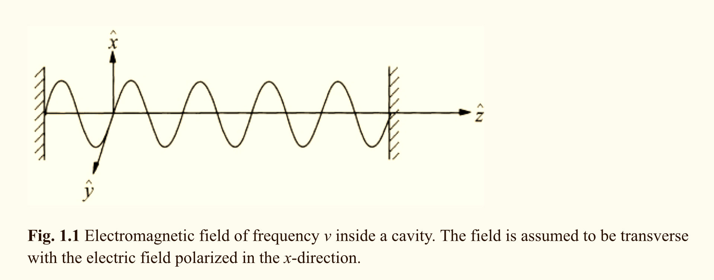

Thoughts¶
[[TODO]]
copy the citation for scully over to the web apps folder
make list of requirements for dipole approximation
copy down Dipole Hamiltonian
Copy Down system and bath hamiltonian
just link to how qutip solves the dynamics
Show results
1D Cavity¶
We follow Scully’s layout in (in Quantum Optics, Ch. 1) and begin with a 1D cavity.

Normal Mode Expansion¶
Following Scully, we take the electric field to be linearly polarized in the x-direction. We then expand the electric field in the normal modes of the cavity.
\(v_j=j\pi c/L\) is the cavity eigenfrequency
\(V = L\,A\) is the volume (\(A\) is the transverse area of the optical resonator)
\(A_j = (\frac{2 \nu^2_j m_j}{V \epsilon_0})^2\)
\(m_j\) is a constant with dimension of mass. It is included so we can establish the analogy beween this system and a spring
Next we expand the non-vanishing component of the magnetic field \(H_y\). $\( H_y = \sum_j A_j (\frac{\dot{q}_j \epsilon_0}{k_j})\cos(k_j z) \)$
Classical Hamiltonian for a 1D cavity¶
The classical Hamiltonian for our 1D cavity is just an integration over the non vanishing field components (\(E_x\) and \(H_y\), which are only non-zero inside the volume \(V\)). $\( \mathcal H = \frac{1}{2} \int_V d\tau (\epsilon_0 E_x^2 + \mu_0 H_y^2) \)\( When we substitute \)E_x\( and \)H_y\( with thier normal mode expansions, we can express the Hamiltonian of the radiation field as a sum of independent oscillator energies. \)\(\begin{align} \mathcal H &= \frac{1}{2} \sum_j (m_j \nu_j^2 q_j^2 + m_j \dot q_j ^2)\\ &=\frac{1}{2}\sum_j \left( m_j \nu_j^2 q_j^2 + \frac{p_j^2}{m_j} \right) \end{align} \)$
\(p_j = m_j \dot q_j\) is the canonical momentum of the \(j\)th mode.
\(q_j\) is the canonical position of the \(j\)th mode #TODO (needs verified)
Scully Ch. 6¶
[[scully]]
Here is the source:
@book{Scully1997, title = {{Quantum Optics}}, year = {1997}, author = {Scully, Marlan O. and Zubairy, M. Suhail}, month = {9}, publisher = {Cambridge University Press}, url = {https://www.cambridge.org/core/product/identifier/9780511813993/type/book}, isbn = {9780521435956}, doi = {10.1017/CBO9780511813993} }
Atom-Field Interaction Hamiltonian¶
In many cases, we only need to concern outserlves with the dipole interaction between light and matter:
\(H = H_A + H_F -e\vec{r}\cdot\vec{E}\)
Expanding this out term by term:
\(H_f = \sum_k \hbar \nu_k (a^\dagger a + 1/2)\) #field-hamiltonian
\(H_A = \sum_i E_i |i\rangle \langle i |\) #atom-hamiltonian
\(\vec E = \sum_{\vec k} \hat \epsilon_{\vec k}\,\mathcal{E}_{\vec k} (a_{\vec k} + a^\dagger_{\vec k})\) #descretized-field
\(e\vec r = \sum_{i j} |i \rangle \langle i | \vec r | j \rangle \langle j | = \sum_{i j} |\mathcal{D}_{i j} \sigma_{i j}\)
Where \(\mathcal{E}_{\vec k} = (\hbar \nu_k/2 \epsilon_0 V)^{1/2}\). When combining all of the above, we find that the dipole interaction Hamiltonian is given by: $\( H = \sum_k \hbar \nu_k (a^\dagger a + 1/2) + \sum_i E_i |i\rangle \langle i| + \hbar \sum_{i j} \sum_{\vec k}g^{i j}_{\vec k} \sigma_{i j}(a_{\vec k} + a^\dagger_{\vec k}), \)\( where \)\( g_{\vec k}^{i j} = -\frac{\mathcal D_{i j} \cdot \hat \epsilon_{\vec k} \mathcal{E}_{\vec k}}{\hbar}. \)$
Two Level Atom¶
We now look at the case of the 2 level atom. The Hamiltonian now takes the form:
Approximations used on this page¶
rotating wave approximation: We ignore counter rotating terms. This amounts to ignoring solutions that break energy convseravtion.dipole approximation: We consider the case where we can assume the spatial variation of the field across the emmitter is negligable. In otherwords, \(\vec{k} \cdot \vec{r} \ll 1\)